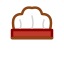
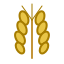

🇧🇷
Título
História & Curiosidades
Ingredientes
Modo de Preparo
Dica do Padeiro:

— Receitas tradicionais de todos os cantos do planeta —
Desde 2026, assando pão, histórias e afeto ao redor do globo
Entre, puxe uma cadeira de vime e sinta o aroma que sai do forno. Aqui, cada país é uma prateleira recheada de delícias: do croissant francês ao pão de queijo brasileiro, do ramen japonês ao tagine marroquino. Explore, aprenda e delicie-se!

As receitas mais amadas, escolhidas a dedo pelo padeiro-chefe. Perfeitas para impressionar a família, conquistar alguém ou simplesmente saborear em um domingo chuvoso.
Selecione um país para descobrir seus pratos tradicionais. Cada bandeira abre a porta de uma cozinha diferente!
A Padaria do Mundo nasceu de uma simples ideia: toda cultura conta sua história pelo que põe na mesa. Do pão sírio achatado na pedra ao brioche amanteigado francês, do mole poblano com suas vinte especiarias ao sushi que vira arte no Japão — cada prato guarda gerações de afeto.
Aqui, reunimos centenas de receitas tradicionais de dezenas de países, organizadas com o mesmo cuidado de uma padaria de bairro que conhece cada freguês pelo nome. Esperamos que você encontre aqui não apenas instruções, mas inspiração para cozinhar com alma.
— O Padeiro
As receitas que você marcou com — todas num lugar só, pra não esquecer de fazer no fim de semana!
Cada receita que você preparou, com sua nota (de 1 a 5) e anotações pessoais. Seu próprio caderno de receitas!
As receitas que estão na sua lista para fazer em breve — aquelas que te deram água na boca!
Crie uma conta grátis para guardar suas receitas preferidas, anotar aquelas que já preparou e montar sua lista das próximas delícias!